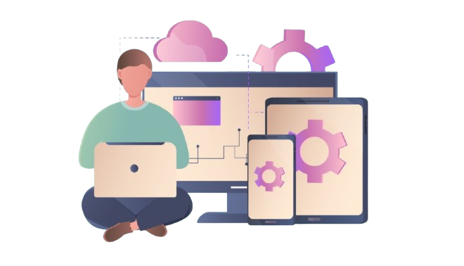
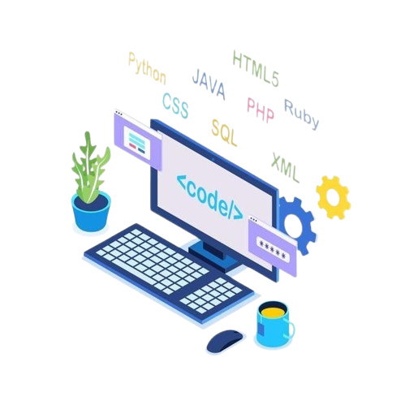
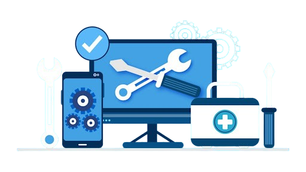
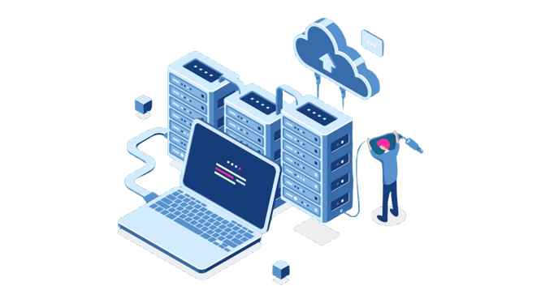

Se você almeja atuar na área da TI (Tecnologia da Informação) deve saber que existem inúmeras possibilidades de ramificações, ou seja, segmentos distintos que exercem funções variadas, afinal, trabalhar com tecnologia não se restringe apenas ao cargo de programador(a), como muitos pensam.
Nesta seção do TechFórum vamos mergulhar nas ramificações da TI e conhecer os principais cargos, o que os profissionais fazem em cada um deles e mais detalhes importantes!
Arquitetura de Software - responsável por organizar os sistemas da empresa, ele define os componentes do software e a forma de interação entre eles. Os arquitetos vão realizar seu trabalho de acordo com os objetivos que determinado sistema deve oferecer, ou seja, de maneira resumida eles constroem a estrutura destas aplicações, planejam elas, algumas dessas tarefas são cruciais para garantir que o sistema seja intuitivo e não tenha bugs. 
Cibersegurança - atualmente existe constantes ameaças e ataques cibernéticos surge a demanda por profissionais capacitados no ofício, ou seja, garantir a segurança no meio digital é a prioridade. Os atuantes são especializados por proteger os sistemas, redes e dados da empresa, além disso, dentro da Cibersegurança é enevitável implantar medidas preventivas aos ataques, isso garante a integridade das informações. OBS: Ataques cibernéticos são riscos que um ambiente digital pode ter aos usuários como, por exemplo, hacker que buscam corremper sistemas e ter acesso não autorizado a informações e dados confidenciais.
Engenharia de Robótica - esta área está emergindo cada vez mais dentro da TI, seus profissionais são responsáveis tanto pelo desenvolvimento quanto pela manutenção de sistemas robóticos que podem ser utilizados em diversas empresas e/ou indústria. A robótica é fundamental para melhorar a eficiência e precisão, a questão é que ela abre portas únicas para a automação de cargos, além de tornar tarefas complexas muito mais fáceis e rápidas de se executar, levando a avanços inimagináveis, mas também colocando em cheque a necessidade da mão de obra humana.
Programação - estas pessoas são peritos em linguagens da programação e com vasto conhecimento eles são capazes de estruturar sistemas, elaborar sites e criar aplicativos que exercem as mais difersas funcionalidades. Porém, há um ponto central nessa ramificação, nesse âmbito é indicado ter uma especialização mais aprofundada em uma linguagem específica, seja Java, JavaScript, Python ou várias outras. 
Suporte Técnico e/ou Manutenção - como o nome sugere este é o profissional que atua na manutenção, montagem e suporte de hardwares e softwares, a configuração de tais sistemas operacionais é tão importante quanto outras áreas da TI, esse funcionário mantém o funcionamento de todo o equipamento da empresa, principalmente os que envolvem falhas e demanda de soluções imediatas. 
Qualidade de Software - este é um ramo não tão conhecido da TI, os testadores (testers) deve garantir o bom funcionamento dos aplicativos da empresa, como o nome dá a entender, é o teste antes de lançar o produto no mercado, a função crucial é assegurar uma experiência satisfatória dos usuários, e testar o app após estar pronto para procurar falhas.
Especialista em Cloud Computing e/ou Computação em Nuvem - a computação em nuvem é uma realidade cada vez mais constante para todas as empresas, sendo assim esse especialista tem a habilidade de planejar, executar e direcionar a capacidade de armazenamento e processamento de dados na nuvem, de forma consistente, além de proporcionar segurança às informações e infraestrutura aos profissionais que trabalham com ela.
Administrador de Banco de Dados - os atuantes desta área cumprem um papel estratégico cada vez mais essencial, nos dias de hoje a informação é a moeda mais valiosa do mercado, por isso deve ser protegida e administrada com cautela. Tal profissional deve fazer a gestão adequada do banco de dados, garantindo a disponibilidade de seus dados, sua função é instalar, configurar e administrar os data centers, desenvolver sistemas de banco de dados, realizar procedimentos periódicos de backup, fazer a emissão dos relatórios quantitativos de eficiência, entre outros. 
Analista de Inteligência de Negócios - também chamada de Analista de Business Intelligence, são funcionários que trabalham com informações referentes ao banco de dados, pois se a empresa conta com um Administrador de Banco de Dados, agora é preciso alguém que saiba como analisar esse material, esses profissionais coletam, compilam, analisam e organizam os dados, isso é importante para acompanhar tendências e tomar decisões na empresa, é um ramo que cresce devido as rápidas mudanças no mercado atual.
Cientista de Dados - essa ramificação exige um perfil muito técnico e estatístico, estes especialistas buscam entender e/ou projetar o futuro da empresa, tanto com previsões como com análise de possíveis cenários, o cientista aplica, de forma aprofundada, a estatística em seu dia, conta com capacidades matemáticas aprimoradas e pensamento lógico, além de ser indispensável possuir boa comunicação, é quase como um solucionador de problemas e projeções futuras para o negócio.
Gerente de TI - com toda a complexidade e dinamismo do setor surge a necessidade de um cargo que gerencia as atividades da área da TI (Tecnologia da Informação), esse especialista deve elaborar, coordenar e implantar projetos, além de supervisionar operações, redesenhar processos, integrar sistemas e, não menos importante, monitora as equipes de tecnologia da empresa. Por ser um ofício de gerência é essencial que o funcionário que o execute tenha conhecimento no setor técnico e marketing, saber se comunicar e liderar.
DevOps e/ou Desenvolvimento e Operações - responsáveis por melhorar e otimizar o trabalho da equipe de desenvolvimento, permitindo a integração de todas as partes envolvidas, padroniza processoes e implementa mais agilidade, ou seja, seu trabalho vai englobar o ciclo de produção, idealização e construção de feedback, para isso é preciso possuir capacidades interpessoais.
Scrum Master - responsáveis por garantir que a equipe oriente seu trabalho com base no guia Scrum, focado em metodologias ágeis e facilitando a entrega final do produto proposto, como mestre ou mestra você deve defender o projeto, certificar que as metas sejam alcançadas, além de realistas, formar equipes eficázes, ter bom relacionamento e promover sinergias.